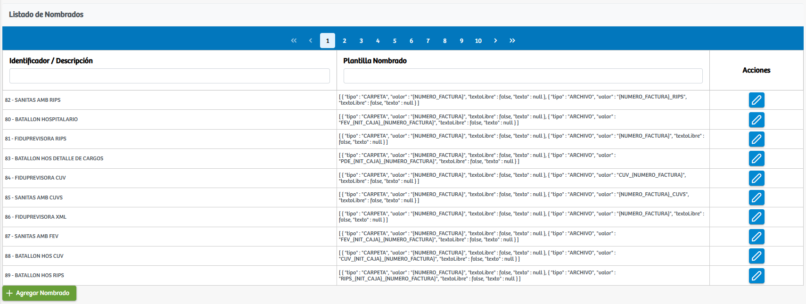
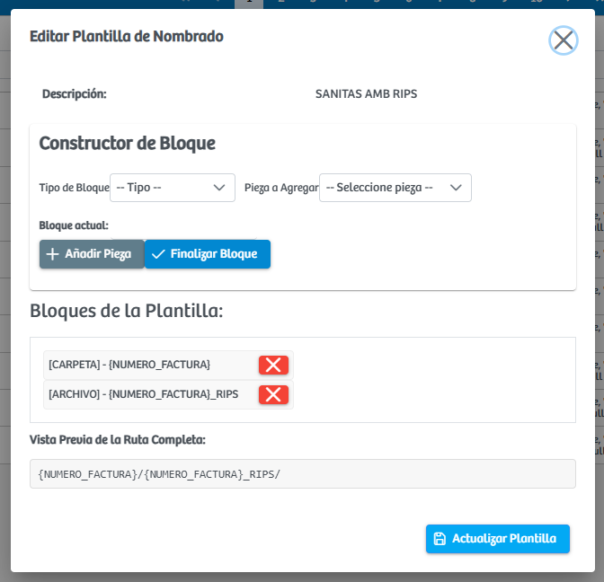
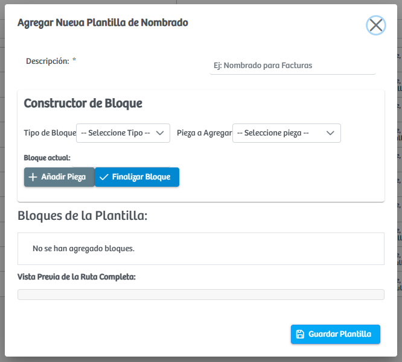

Modulos Sas-Web
Funcionalidades
Parametrizar Nombrado de Archivos
El módulo Parametrizar Nombrado de Archivos permite administrar la estructura con la que serán descargados los soportes asociados a los diferentes procesos del sistema. Al ingresar a este módulo se presenta una vista general que muestra, para cada registro configurado, su identificador y la plantilla de nombrado definida. Esta plantilla determina cómo se conformará el nombre final del archivo al momento de ser generado, incluyendo variables como número de factura, número de caja u otros valores dinámicos.
Cada fila dispone de un botón de edición que abre un modal en el que es posible visualizar la descripción del nombrado y utilizar las herramientas del constructor de bloques para modificar la estructura actual. En este modal el usuario puede seleccionar el tipo de bloque, elegir las piezas que lo componen, añadirlas a la plantilla y observar en tiempo real la vista previa de la ruta o nombre resultante, finalizando con la actualización de la configuración.
Además, el módulo incorpora la opción Agregar Nombrado, ubicada en la parte inferior de la pantalla. Al seleccionar esta acción se abre un modal similar al de edición, pero vacío, permitiendo crear un nombrado completamente nuevo. Este proceso incluye definir la descripción, construir los bloques con las piezas requeridas y generar la vista previa antes de guardar. En conjunto, este módulo ofrece una herramienta flexible y efectiva para garantizar que los archivos exportados sigan una estructura consistente y alineada con los requisitos operativos de cada convenio o proceso.
